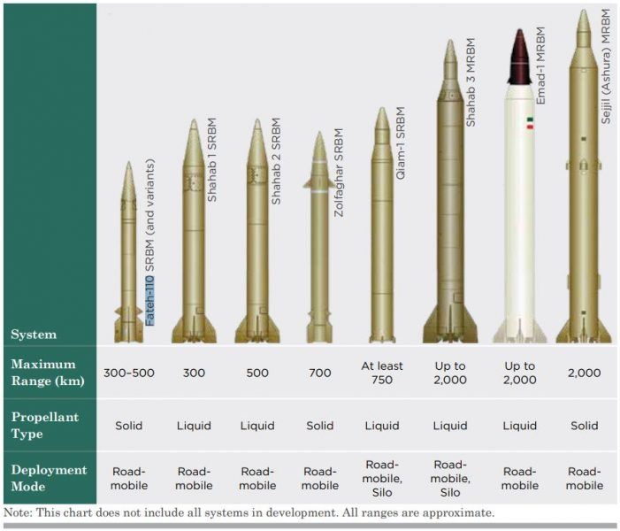
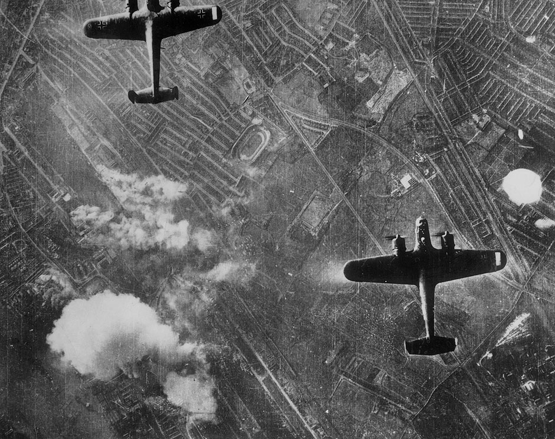
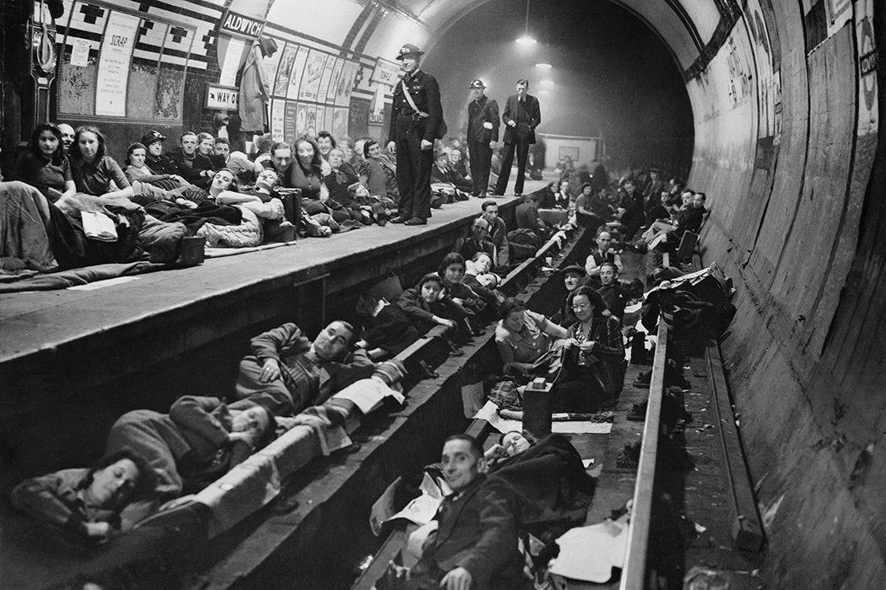

공습 경보와 방공호 - 북한과의 분쟁에서도 통할까?
게시: 2020-01-16T06:30:40+09:00
최근 미국과 이란이 드론과 미사일을 이용하여 서로의 싸다귀를 날리며 전세계에 소동을 일으켰습니다. 결과적으로는 이란의 공격은 건물만 때려부순데다 엉뚱한 민항기를 격추시키는 비극만 일으켰고, 덕분에 반정부 시위만 더 거세진 것 같습니다. 이란의 미사일 공격에 대해서는 '대내적 선전 효과를 위해 시늉만 낸 것이고 인명 살상을 노린 것은 아니다' '이라크를 통해 미국에게 사전에 대피를 지시했다' 등의 이야기가 있었습니다. 실제로 보도에는 공습 경보를 받은 미군 병사들은 모두 방공호에 대피하여 인명 피해가 없었다고 되어 있었습니다. https://www.npr.org/2020/01/08/794501068/what-we-know-irans-missile-strike-against-the-u-s-in-iraq A Defense Department official issued a written statement Wednesday afternoon saying, "U.S. early warning systems detected the incoming ballistic missiles well in advance, providing U.S. and Coalition forces adequate time to take appropriate force protection measures." 미국방부 관리는 수요일 오후 다음과 같은 내용의 문서화된 성명서를 발표했다. "미국의 조기 경보 시스템이 날아오는 탄도 미사일을 미리 탐지하여 미군과 동맹군에게 적절한 병력 보호 조치를 취할 시간을 제공했다." 저는 그 공습 경보 관련 보도를 읽고 상당히 의아했습니다. 아무리 사전에 탐지를 한다고 해도 마하4의 속도로 약 400km를 날아오는데는 5분 정도 밖에 시간이 걸리지 않습니다. 발사 순간 탐지해서, (어디가 목표인지 모르니) 이라크 전역의 모든 미군에게 공습 경보를 날린다고 해도 밤에 자고 있던 병사들이 방공호로 뛰어들어갈 시간이 충분할 것 같지가 않습니다. 그래서 아마도 그런 레이더 탐지 외에도 뭔가 사전 정보를 받은 것 아닌가 생각했습니다. 이번에 기사가 난 것을 보니 실제로 공격 받은 기지의 미군들은 공격받기 두 시간 전에 경고를 받고 방공호로 대피했다고 합니다. https://news.v.daum.net/v/20200114064833958 "이란이 첫 미사일을 발사하기 두시간여 전 이라크 아인 알아사드 공군기지에 주둔한 미군들은 콘크리트 벙커로 몸을 피했다." 여기에 대해서는 두가지 가설이 있을 수 있습니다. 1) 이란이 탄도 미사일에 액체 연료를 주입하는 등 발사 준비를 하는 것을 위성 등을 이용해 탐지한 뒤 그 사거리 내에 있는 모든 미군 기지에 대피 명령을 내렸다. 2) 이라크든 이란이든 누군가를 통해 미리 언제 어느 기지에 미사일을 발사할 것이니 미리 대피하라는 첩보를 입수했다. 둘 다 가능한 이야기이긴 합니다. 다만 1번의 경우, 너무 많은 미군들이 너무 오랫동안 대피해야 한다는 단점이 있긴 합니다. 보통 탄도 미사일의 액체 연료는 매우 독성이 강한 부식성 물질이라서 미사일 연료 탱크 자체를 녹여버리기 때문에 일단 주입을 하면 반드시 몇 시간 안에 발사를 해야 합니다. 다만 미사일에 액체 연료를 주입한 뒤 10분 안에 발사를 할지 6시간 후에 발사를 할지 아무도 모르기 때문에, 이란이 발사대 차량을 꺼내어 액체 연료를 주입하는 시늉을 할 때마다 반경 700km 안의 모든 미군들이 방공호로 기어들어가서 몇 시간씩 밖에 나오지 못한다면 그것 자체가 본질적으로 문제가 됩니다. 어떤 것이 진실인지는 저는 모릅니다.

(이번에 이란이 쏜 미사일은 Qiam 1 같다고 합니다. 그림 출처는 https://www.army-technology.com/features/what-missiles-did-iran-use-to-attack-us-bases/ )
이번 일을 보면서 생각난 것이 당장 북한의 장사정포 사정거리 안에 들어있는 서울 시민들의 방공호 문제였습니다. 요즘은 최소한 북한과 당장 전쟁이 날지 모른다는 공포심은 (정치적인 좌우를 떠나) 없는 것 같습니다. 저는 무척 고마운 일이라고 생각합니다. 저는 겁이 많아서 북한과 전쟁을 벌일 경우 저와 우리 가족이 입을 피해에 대해 생각을 깊이 하는 편이거든요. 실제로 북한과 미국이 북핵 문제로 으르렁 거릴 때 저는 집에 비상 식량도 꽤 사놓았었습니다. 그 다음 해에 화해 무드가 시작되면서 그거 다 먹느라고 애 많이 썼지요. 그런 겁장이인 제가 내린 결론은 서울 시내에 포탄이 떨어지더라도 우린 그냥 우리 아파트에 그대로 눌러앉는다는 것이었습니다. 집 근처 방공호로 뛰어갈 생각하지 말고 그냥 욕조에 물 받아두고 침대에서 두꺼운 이불 뒤집어쓰고 웅크리고 있는 것이 제일 낫겠더라고요. 그렇게 결론을 내린 이유는 간단합니다.

1. 공습 경보가 울리더라도, 방공호까지 뛰어갈 시간이 없습니다. 민방위 훈련할 때 하는 것처럼, 공습 경보가 울리고 사람들이 질서있게 방공호로 대피하는 것은 제2차 세계대전 때 영국과 독일에서 행해지던 절차입니다. 그때는 프로펠러 폭격기들이 바다 건너에서 날아왔으니 충분히 경보를 울리고 대피할 시간이 있었습니다. 그러나 서울의 경우는 음속의 2~3배로 포탄이 날아옵니다. 발사 순간 탐지를 하더라도 1~2분 안에 포탄이 터지기 때문에 도저히 경보를 울리고 대피를 할 시간이 없습니다. 방공호를 찾아가느라 도로에 나가 있는 동안에 포탄이 떨어지는 것이 훨씬 더 위험합니다. 차라리 그냥 철근 콘크리트 아파트의 벽을 믿고 이불 뒤집어 쓰고 있는 것이 더 낫습니다. 2. 방공호에서 오랜 시간을 버틸 수가 없습니다. 체공 시간에 한계가 있는 폭격기와는 달리 포격은 (북한 장사정포들이 파괴되지 않는 한) 저들이 원할 때까지 얼마든지 간헐적으로 계속 쏘아댈 수 있으므로, 언제까지 방공호에 머물러 있으면 되는지 종잡을 수가 없습니다. 최악의 경우 방공호에 들어간 시민들을 유인해내려고 한 10분 포격을 하다가 30분 동안 포격을 중단한 뒤, 시민들이 다시 집으로 가기 위해 거리로 나올 때 다시 포격을 하면 대참사가 벌어질 수 있습니다. 그렇다고 언제까지 방공호에 머무를 수도 없습니다. 물과 음식이 문제가 되기 전에, 좁고 불편할 뿐만 아니라 화장실도 제대로 준비되지 않은 방공호에서는 3시간 이상 버티는 것이 쉽지 않습니다. 아마 1시간이 지나면 대부분의 시민들이 집에 가겠다고 뛰쳐 나올 것 같습니다.

그래서 트럼프가 한국 지도를 보고 '서울이 왜 저렇게 휴전선에 가깝냐, 이건 아니다, 한국은 서울의 시민들을 이동시켜야 한다'라고 말했다는 소문이 사실 꽤 그럴싸한 이야기입니다. https://www.theguardian.com/us-news/2019/dec/09/trump-seoul-evacuation-north-korea-book
When he was shown the bright lights of Seoul just 30 miles south of the demilitarized zone separating the two Koreas, the president asked: “Why is Seoul so close to the North Korean border?” Trump had been repeatedly told that US freedom of action against North Korea was constrained by the fact that the regime’s artillery could demolish the South Korean capital in retaliation for any attack, inflicting mass casualties on its population of 25 million. “They have to move,” Trump said, according to Bergen, who adds that his officials were initially unsure if the president was joking. But Trump then repeated the line. “They have to move!”
두 한국을 나누는 DMZ 남쪽 바로 30마일 아래에 밝은 서울시의 불빛이 있는 야간 위성 사진을 보고는 대통령은 물었다. "서울이 북한과의 국경에 왜 저렇게 가깝게 붙어있는가?" 전해지는 바에 따르면 트럼프는 북한이 언제든 보복으로 남한의 수도를 파괴하여 2500만의 인구에 대해 대량 학살을 일으킬 수 있다는 사실 때문에 북한에 대한 미국의 작전이 크게 제한된다고 언급했다. 버겐(Bergen)에 따르면 트럼프는 "그들은 이사를 가야해" 라고 말했고, 각료들은 대통령이 농담을 하고 있다고 생각했다고 한다. 그러나 트럼프는 다시 반복해서 말했다. "이사를 가야 한다고." 이건 2018년 싱가폴에서의 정상회담 직후 트럼프가 기자 회견을 하면서 했던 말과 일치하는 이야기입니다. 그때 제가 생방송으로 보면서 인상 깊었던 부분은 트럼프가 이런 말을 하는 부분이었습니다. 저걸 북한 애들도 들을 방송에서 말한다는 것은 '사실 서울이 인질로 잡혀 있기 때문에 미국은 북한과 전쟁을 하고 싶어도 할 수가 없어' 라는 것을 자인한다는 것인데 저래도 되나 싶었거든요.
https://www.vox.com/world/2018/6/12/17452624/trump-kim-summit-transcript-press-conference-full-text
> Thank you, Mr. President. Could you talk about the military consequences for north
Korea if they don’t follow through on the commitments? > 고맙습니다, 대통령님. 만약 북한이 약속을 지키지 않을 경우 뒤따를 북한에 대한 군사적 행동에 대해 말씀해주실 수 있으신지요 ? > I don’t want to talk about it. That’s a tough thing to talk about. I don’t want to be
threatening. They understood that. You have seen what was perhaps going to happen.
You know, Seoul has 28 million people. We think we have big cities. You look at New
York with 8 million people. We think it is a big city. Seoul has 28 million people. Think of that. It is right next to the border. It is right next
to the DMZ [demilitarized zone]. It’s right there. If this would have happened — I have
heard 100,000 people. I think you could have lost 20 million people or 30 million people.
This is really an honor for me to do this. I think potentially you could have lost 30
million or 40 million people. The city of Seoul. It is right next to the border. > 저는 거기에 대해 이야기하고 싶지 않습니다. 그건 언급하기 굉장히 껄끄러운 일입니다. 저는 협박을 하고 싶진 않습니다. 그들도 그걸 이해합니다. 무슨 일이 일어날 것인지 여러분도 보신 바 있습니다. 아시다시피 서울 인구는 2천8백만입니다. (아마 경기도 인구까지 합해서 말하는 듯: 역주) 큰 도시들이 있다고 생각합니다. 8백만 인구의 뉴욕 시를 보십시요. 우리 생각에 그건 큰 도시입니다. 서울에는 2천8백만의 인구가 있습니다. 그걸 생각해보세요. 바로 국경 옆에 있습니다. DMZ 바로 옆에 있습니다. 바로 거기 있다고요. 그런 일이 일어난다면 - 제가 듣기로는 10만명 정도가 될 거라고 하더군요. (사상자를 뜻하는 듯 : 역주) 제 생각으로는 2천만에서 3천만 정도를 잃을 수 있을 것 같아요. 이 일을 하는 것은 제게는 진짜 영광입니다. 3천만에서 4천만의 인구를 잃을 수도 있었어요. 서울시, 그거 바로 국경 옆에 있다고요.
전쟁에서의 용기는 최전선에서의 거리와 정비례한다는 말이 있지요. 북한을 폭격해야 한다고 주장하시는 분들은 북한과 전쟁이 벌어지면 미군이 알아서 드론과 스마트 폭탄으로 북한군을 전멸시켜 줄 것이고 자신과 자신의 가족은 아무일 없을 거라고 생각하는지 모르겠습니다. 그러나 트럼프는 그렇게 생각하지 않는 것이 확실합니다. 피해가 10만 미만이면 할 만한 전쟁이라고요 ? 그런 말씀하시는 분들은 계백장군처럼 자신과 자신의 가족부터... 아니죠... 아무리 그래도 계백장군처럼 아동 살해하는 가부장적 꼰대가 되어서는 안되겠지요. 북한을 정말 폭격하려면 먼저 서울 시민부터 다 소개시켜야 합니다. 그러면 북한이 어떻게 나오느냐에 상관없이 우리나라 망합니다. 서울 아파트값 폭락할 것이고 그에 따라 은행도 다 망할 것이며 그러면 수출입 대금 지불이 안 되어 기업들도 다 망합니다. 천조국의 오버 테크놀로지로 한 달이면 북한군을 전멸시킬 수 있으니 한달 뒤에 아파트값 원상회복될 것이라고요 ? 글쎄요. 아마 서울 시민 소개 작업 자체가 몇 달 걸릴 것이고 그 사이에 우리나라의 은행들과 기업들은 확실히 망할 것입니다. 동네 편의점과 음식점 등 소상공인들은 말할 것도 없고요. 그래서 북한과의 평화는 매우 중요합니다. 민주주의 체제가 아닌 북한과의 통일은 어렵겠지만, 최소한 상호간 적대 행위를 중단하는 것만으로도 양측 모두에게 큰 번영이 올 것이라고 생각합니다. 북한을 어떻게 믿을 수 있는가라는 질문이 반드시 따라 올 수 밖에 없는데, 거기에 대해서는 (당연히) 저도 답은 없습니다. 제 개인적인 생각으로는 세습 독재자를 믿는 것처럼 바보같은 일은 없다고 봅니다. 그러나 저는 그 전망에 대해 부정적이지는 않습니다. 낯선 사람과 전세 계약 맺을 때처럼 안전 장치도 갖추고 보증보험이 되어 있는 중개인을 세워야겠지요. 어차피 대부분의 전세 계약은 낯선 사람과 맺습니다.